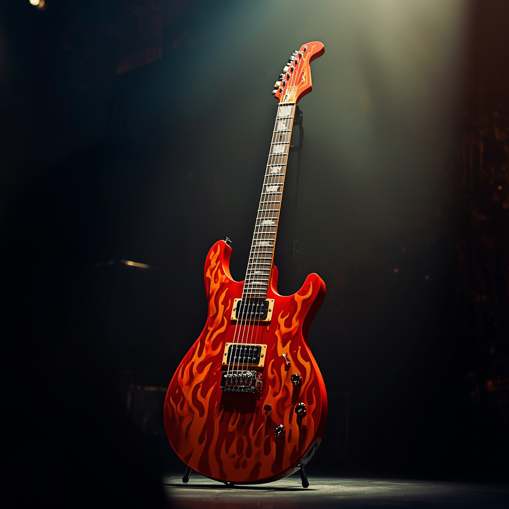

Bem-vindo ao seu ponto de encontro na jornada das seis cordas! Se você acabou de comprar sua primeira guitarra ou está lutando para fazer a pestana soar limpa, este é o seu lugar.
🎸 Afinador com Efeito de Eco Virtual
Clique nas notas para ouvir o som:
Toque em uma corda para ouvir o eco...

01. Introdução ao Universo da Guitarra
A guitarra elétrica é um dos instrumentos mais icônicos do mundo, moldando gêneros que vão do rock e blues ao pop e jazz. Compreender a anatomia da guitarra é o primeiro passo importante.
02. Guia de Modelos e Captação
A escolha de uma guitarra envolve entender como o design e a eletrônica afetam o som final. Modelos clássicos como a Stratocaster e a Telecaster utilizam captadores single-coil.
03. Correção de Vícios Técnicos
No início do aprendizado, a repetição de movimentos incorretos pode gerar vícios difíceis de corrigir no futuro, além de causar desconforto muscular.
04. Planejamento de Rotina de Treino
O desenvolvimento técnico na guitarra depende diretamente da regularidade dos estímulos enviados ao cérebro. Práticas diárias curtas de 20 minutos são ideais.
05. O Segredo da Palhetada Alternada
Dominar o movimento de subida e descida da palheta de forma simétrica é essencial para ganhar velocidade e fluidez rítmica no instrumento.
06. Como Escolher O Primeiro Amplificador
Para quem treina em casa, a potência bruta não é o fator mais importante, mas sim a fidelidade sonora e os recursos práticos de simulação digital.
07. Como Ler Tablaturas Sem Erros
A tablatura é o sistema de notação mais prático para guitarristas, representando de forma direta as seis cordas do instrumento no papel ou tela.
08. Higiene e Manutenção das Cordas
O suor e a umidade aceleram o processo de oxidação natural. Passar um pano de microfibra seco após o treino prolonga a vida útil das cordas.